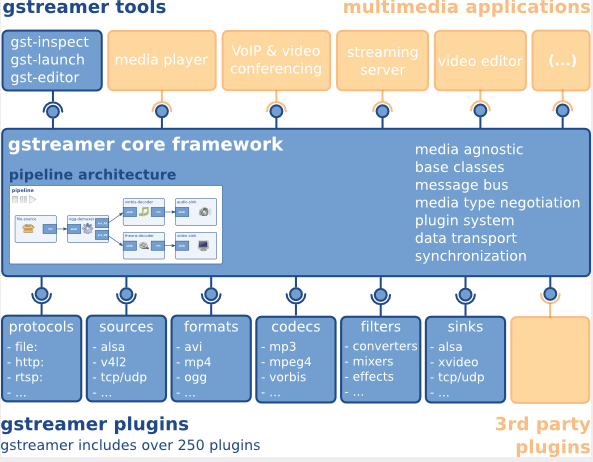

Gstreamer 使用指南
15 Jan 2024
Read time: 1 minute(s)
Gstreamer 是一个开源的多媒体框架，官方网址：https://gstreamer.freedesktop.org 。
| 术语 | 定义 | 注释说明 |
|---|---|---|
| VE | Video Engine | 视频加速引擎 |
| DE | Display Engine | 显示引擎 |
| MPP | Media Process Platform | 通用多媒体处理软件平台 |

Gstreamer 支持采用插件方式扩展功能，开发者可以灵活使用已有插件，并且可以自定义特定功能插件。
Gstreamer 的第三方库包括：
-
gstreamer：核心库函数
-
gst-plugins-base：一组重要的基础库
-
gst-plugins-good：符合 LGPL 协议的优质插件
-
gst-plugins-ugly：使用了 GPL 协议的优质插件
-
gst-plugins-bad：代码质量有待提高的插件
-
gst-libav：libav 编解码库的插件
模块特性
Gstreamer 支持通过插件扩展功能，以下是一些常见特性。
-
文件封装格式：mp4/mov/3gp，flv，mpeg-ps/ts，mkv/webm，avi
-
视频格式：H.264
-
音频格式：mp3，aac，wav
-
流媒体协议：http，rtsp